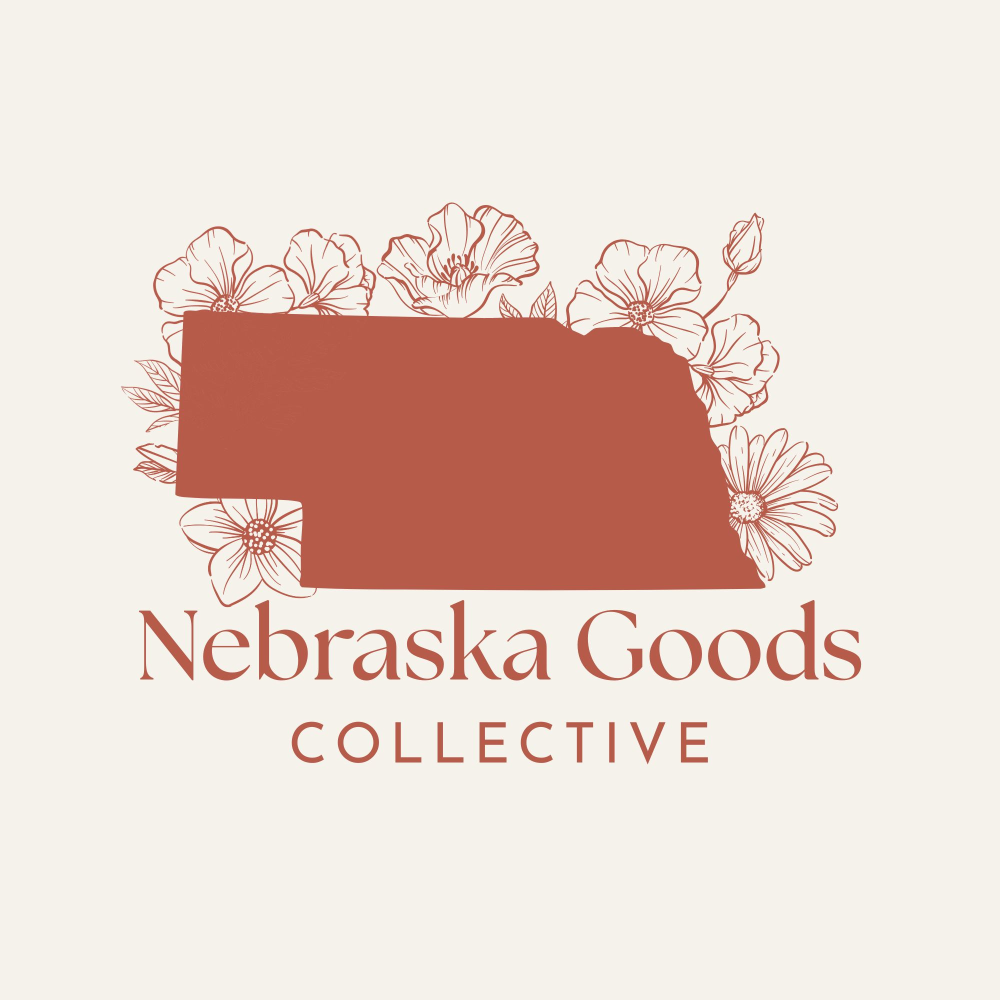
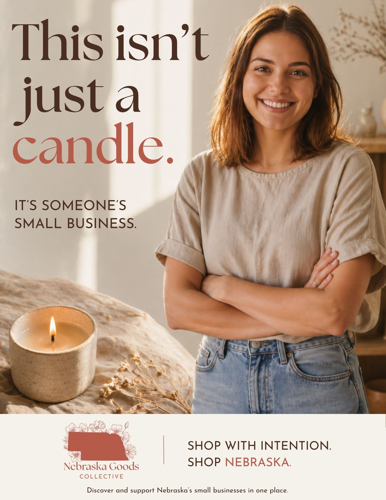
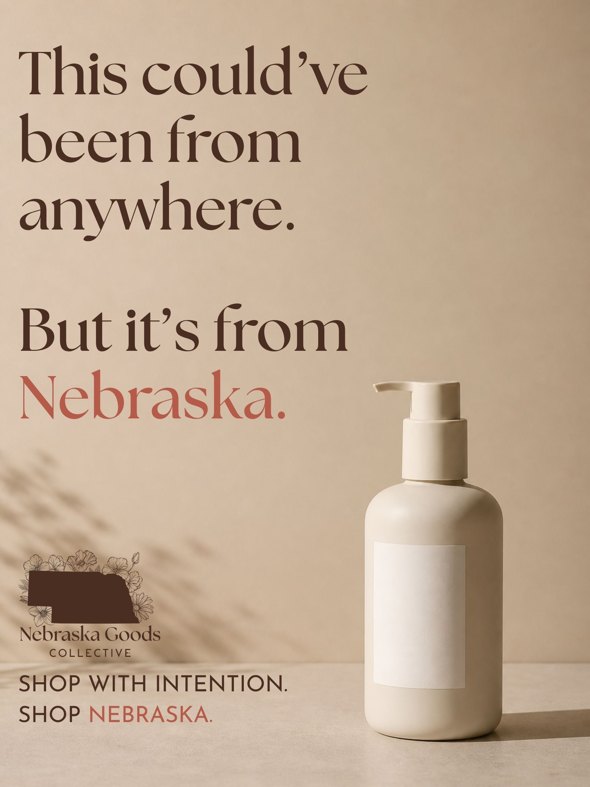

Nebraska Goods Collective
A brand campaign celebrating local Nebraska makers through a warm, thoughtful visual identity and community-focused advertising.
Brand Manifesto
99% of all businesses in Nebraska are small businesses. They empower our community through creativity, innovation, and sustainability. We believe these businesses deserve to be seen, supported, and given the opportunity to thrive. We believe Nebraskans can strengthen our communities by shopping locally and sustainably.
Many people want to support local businesses but aren’t aware of the ones around them. Nebraska Goods Collective exists to make discovering and supporting Nebraska’s small businesses simple, accessible, and meaningful. We bring small businesses together on an all-in-one platform so you can feel proud of where you shop and who you support.
We promise to create opportunities for small businesses to grow and give customers a shopping experience that feels exciting and meaningful. Every purchase you make through Nebraska Goods Collective directly supports a small business, strengthens our state, and paves the way for a more sustainable future.
Our vision is to make buying from Nebraska’s small businesses a routine decision. Invest in homemade goods and help us create a future where local businesses succeed.
Shop with Intention. Shop Nebraska.
Brand Identity

Logo Design
A visual identity created to feel local, warm, handcrafted, and rooted in Nebraska pride.
Campaign Deliverables

Magazine Ad

Bus Shelter Ad
Social Media Ads
Brand Activation

Activation Concept
A visual concept showing how Nebraska Goods Collective could appear in a real community experience or interactive brand moment.